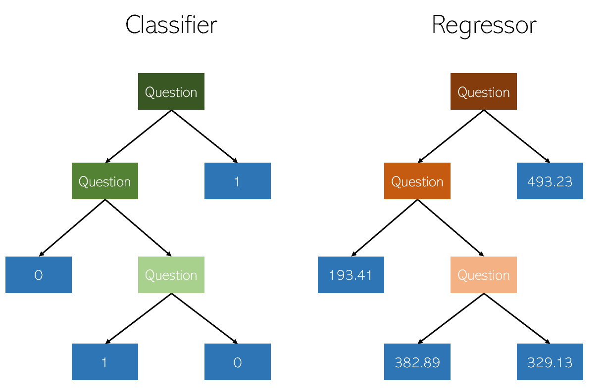
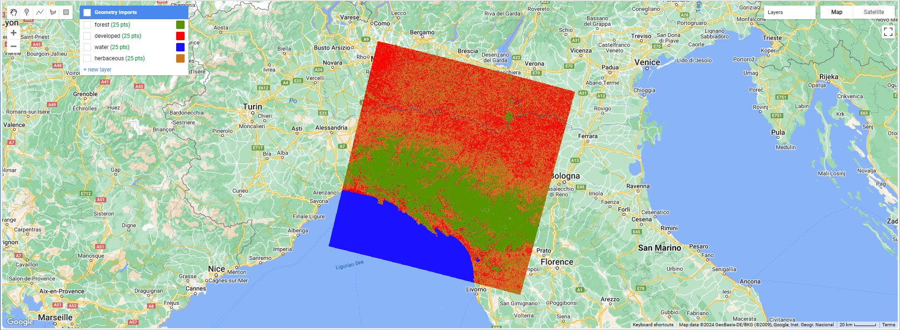
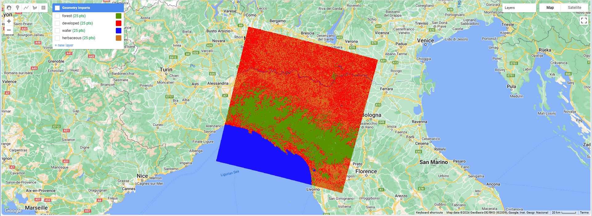
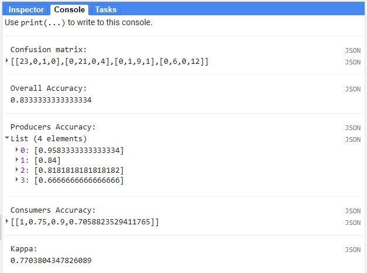
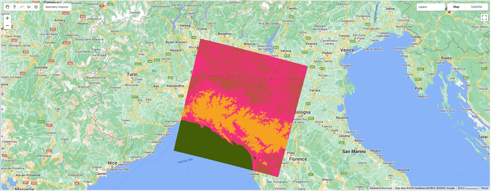

6 Week 6 - Classification
6.1 Summary
This week’s content is mainly about the classification of remote sensing data, including application scenarios, methodologies, etc.
6.1.1 Use of categorical data
6.1.1.1 Air pollution monitoring
Remote sensing data can monitor pollutants in the atmosphere, such as sulfur dioxide (SO2), nitrogen oxides (NOx), ozone (O3), particulate matter (PM2.5 and PM10), etc. By analyzing remote sensing images, pollution sources can be identified, pollution spread can be monitored, air quality can be assessed, and recommendations can be provided for policy development.
6.1.1.2 Land use analysis
Classification of remote sensing data can be applied to land cover, which is helpful for identifying and classifying the natural state of the land surface and the state changed by human activities. In terms of change detection, changes in land cover and land use, such as urban expansion, deforestation, farmland conversion, etc., are identified by comparing remote sensing images at different time points. In terms of planning and management, remote sensing data can provide scientific basis for urban planning, natural resource management, environmental protection, etc. In addition, remote sensing data classification can also be used for forest resource survey, forest health assessment, fire monitoring and forest pest and disease detection.
6.1.1.3 The importance of remote sensing data classification
The importance of remote sensing data classification lies in its ability to transform large amounts of data collected from remote sensing equipment into useful information, which is crucial for environmental monitoring, resource management, urban planning, agriculture, disaster response and many other fields.
6.1.2 Classification methods of remote sensing data
Remote sensing data classification is the process of assigning pixels in remote sensing images to different categories (such as water bodies, forests, cities, etc.). The methods mainly involve expert systems, machine learning, and deep learning methods. This week we will focus on some classic machine learning methods.
First let’s look at supervised learning. Supervised classification refers to using samples (training sets) of known categories to guide the classification process.
6.1.2.1 Classification and Regression Trees (CART)
CART can be used to solve classification problems (i.e., predict the value of a discrete variable) and regression problems (i.e., predict the value of a continuous variable). It works by recursively splitting a data set into smaller subsets while building nodes of a decision tree for each subset.

6.1.2.1.1 Working principle
Select the best split point: The CART algorithm starts from the root node and selects the best split point to split the data set into two subsets. The criterion for choosing the split point is to maximize the increase in purity of the two subsets (for classification problems) or to minimize the mean square error (for regression problems).
Recursive splitting: Repeat step 1 for each generated subset until a stopping condition is met, such as the node reaching the minimum number of samples, the tree reaching the maximum depth, or the subset can no longer further improve purity or reduce error.
Pruning: In order to avoid overfitting, the CART algorithm will simplify the decision tree through pruning. Pruning can be done after the tree is fully grown (post-pruning) or while the tree is growing (pre-pruning). The purpose of pruning is to remove nodes that do not contribute significantly to the model’s predictive ability.
6.1.2.1.2 Classification and regression
Classification tree: When the target variable is discrete, CART generates a classification tree. At each leaf node, it gives a category as the prediction result. Criteria commonly used by classification trees when selecting split points include gini impurity and information gain.
Regression tree: When the target variable is continuous, CART generates a regression tree. At each leaf node, it will give a numerical value as the prediction result. The criterion commonly used by regression trees when selecting split points is minimizing the mean square error (MSE).
6.1.2.2 Random Forests
Random Forests are used to solve classification and regression problems. It is a type of ensemble learning method that makes the final decision by building multiple decision trees and summarizing their prediction results. The core idea of the random forest algorithm is “collective intelligence”. A single decision tree may not be accurate or stable enough to predict the data, but combining the prediction results of multiple decision trees can significantly improve the accuracy and robustness of the prediction.

6.1.2.2.1 Working principle
Bootstrap sampling: Randomly select N samples from the original data set as a training set for a decision tree. This process is repeated to generate different training data sets for each decision tree.
Build a decision tree: For each decision tree when splitting at each node, a certain number of features are randomly selected from all features, and then the best splitting feature and split point are selected. This practice increases diversity among decision trees.
Training of decision trees: Each decision tree is trained independently on its corresponding training set until each leaf node is pure or reaches the minimum number of node samples, usually without pruning.
Aggregated prediction results: For classification problems, Random Forests work through a “voting” mechanism, that is, each decision tree gives a prediction result, and the final result is the category with the most votes among all tree predictions. For regression problems, Random Forests averages the predictions of all decision trees as the final prediction.
6.1.2.2.2 Advantages and disadvantages
Advantage:
High accuracy: Random forests often provide high accuracy by integrating multiple decision trees.
Resistance to overfitting: Compared with a single decision tree, a random forest is less likely to be overfitted.
Flexibility: Able to handle classification and regression tasks, suitable for both continuous and categorical variables.
Provide feature importance evaluation: being able to evaluate the contribution of each feature to the model and it is helpful for feature selection.
Disadvantages:
Poor model interpretability: Because Random Forest involves multiple decision trees, its prediction process is not as intuitive and easy to understand as a single decision tree.
Training and prediction speed: Random Forests require more computing resources and time than a single decision tree, especially when working with large-scale data sets.
6.1.2.3 Maximum Likelihood Classification (MLC)
Maximum Likelihood Classification (MLC) is based on statistical principles and makes classification decisions by estimating the probability of generating observed data for each category.
Working principle: For a given pixel, the maximum likelihood classification algorithm calculates the probability that it belongs to each possible class and classifies the pixel into the class with the highest probability.
6.1.2.3.1 Advantages and disadvantages
Advantages:
Solid theoretical foundation: Based on statistical principles, it has a solid theoretical foundation and can effectively and clearly explain the classification results.
Wide applicability: suitable for various remote sensing data and various types of classification problems.
Disadvantages:
Normal distribution assumption: MLC assumes that the data are multivariate normally distributed within each category, which may not always hold true in practical applications.
Computational complexity: For data with higher feature dimensions, the computational complexity of MLC is higher.
Dependence on training samples: The performance of MLC relies heavily on high quality training samples. If the training samples are insufficient or unrepresentative, the classification results may be inaccurate.
6.1.2.4 Support Vector Machine (SVM)
Support Vector Machine (SVM) is a powerful supervised learning algorithm used for classification and regression problems. SVM looks for the best decision boundary in a high-dimensional space. This decision boundary is called a maximum-margin hyperplane. It aims to maximize the margin between different categories, thus providing optimal category separation.

6.1.2.4.1 Working principle
Maximum Margin: SVM attempts to find a hyperplane that maximizes the distance between the nearest data points (support vectors) from different categories.
Support vector: The determination of the decision boundary only relies on the data points closest to the boundary, which are called support vectors.
Linear and non-linear classification: In the case of linear separability, SVM finds a straight line (in two-dimensional space), plane (in three-dimensional space) or hyperplane (in higher-dimensional space) to separate different categories. For nonlinearly separable data, SVM uses a kernel function to map the data to a higher-dimensional space. In this new space, the data may be linearly separable.
Kernel function is the key to SVM processing nonlinear problems. Commonly used kernel functions include:
Linear kernel: Used for linearly separable data.
Polynomial kernel: Can map data to high-dimensional space and is suitable for nonlinear problems.
Radial basis function kernel (RBF, also known as Gaussian kernel): Can handle various nonlinear problems.
Sigmoid kernel: Similar to the activation function in neural networks.
6.1.2.4.2 Advantages and disadvantages
Advantages:
Strong generalization ability: SVM has shown good generalization ability in many practical problems, that is, it can make accurate predictions on unseen data.
Suitable for high-dimensional data: SVM works well when dealing with high-dimensional feature spaces and can work effectively even when the number of features is greater than the number of samples.
Suitable for small sample data: SVM can also show good performance on small sample datasets.
Flexibility: By choosing an appropriate kernel function, SVM can be used to solve various types of nonlinear problems.
Disadvantages:
Parameter selection and tuning: The performance of SVM depends largely on the selection of kernel functions and parameter tuning, which requires fine adjustments.
Computational cost: For large-scale data sets, training of SVM can be very time-consuming, especially when complex kernel functions are chosen.
Interpretability: The decision-making logic of the SVM model is not as intuitive and easy to understand as the decision tree, and the model has poor interpretability.
6.1.2.5 Now let’s look at unsupervised learning
Unsupervised classification does not rely on training samples but identifies patterns and categories directly from the data.
Common unsupervised classification algorithms include:
K-means clustering
DBSCAN and HDBSCAN
Iterative Self-Organizing Data Analysis (ISODATA): It is an improvement of K-means, allowing the number of categories to be merged and split during the iterative process, and more flexibly handles complex data.
6.1.2.6 Conclusion
In practical applications, in order to improve the accuracy and reliability of classification, multiple methods are often used in combination. The choice of method for classifying remote sensing data depends on the specific application requirements, data type and available resources.
6.1.3 Practical
For this week’s practical, CART, Random forests, and K-means methods were mainly used to classify remote sensing data.
The remote sensing data uses Landsat 8 data, the location is Milan, Italy, and the time is from 01/01/2019 to 01/01/2020.
6.1.3.1 First use two supervised learning methods
Each land cover category in the image is labeled as follows:
- Forest: 0
- Developed: 1
- Water: 2
- Herbaceous: 3


By comparing the results of CART and random forests, it can be found that random forests are more accurate for forest classification, and the results of other categories are roughly the same. Since the dataset is manually labeled and contains only a small number of samples, collecting more training data, selecting appropriate hyperparameters, and adding more predictor variables (such as spectral indices) can lead to better classification results.

It can be seen from the statistical information extracted from the confusion matrix that the classification results of random forests are relatively ideal, but there are still a small number of samples belonging to the herbaceous category that are identified as the developed category.
6.1.3.2 And then use an unsupervised learning method

Since the unsupervised method cannot correspond the classification results to each category, from the results, yellow indicates forest, blue indicates water, dark yellow indicates herbaceous, and pink indicates developed.
6.2 Applications
Machine learning methods have been widely used to classify remote sensing data.
One study (Saini and Rawat, 2023) used machine learning methods to classify different types of land in remotely sensed images. Four machine learning methods were specifically tested in the Nanital district of India using high quality satellite imagery. This study found the random forest method to be the most accurate, followed by support vector machines, K-nearest neighbors, and artificial neural networks. But the study only tested four machine learning techniques, and there may be other ways to do better classification. And it only focuses on a single region of India, meaning the results may be different in other places with different landscapes or weather conditions. In addition, the study used satellite data with a resolution of 10m, which is very detailed, but there may still be small changes on the land that these data cannot show.
Another study (Ahmad et al., 2020) aimed to classify vegetation into different types and categories and compared their effectiveness in vegetation classification using three machine learning methods, namely K-means, support vector machine and artificial neural network. The study found that both supervised and unsupervised algorithms can be effective for vegetation classification, with each algorithm having its own advantages. However, the study did not discuss the accuracy and reliability of machine learning algorithms under different environmental conditions, which may affect the classification results. Temporal changes in vegetation are also not taken into account, which could lead to misclassification due to seasonal changes or agricultural practices. Furthermore, information on the computational resources required by the algorithm is not discussed, which is very important for practical applications, especially in areas with limited computational infrastructure.
In addition to comparing different machine learning methods, there is also a study (Alimjan et al., 2018) that proposes a new method that combines support vector machines (SVM) and k-nearest neighbors (KNN). The study improves the accuracy of classifying remote sensing images by simultaneously using the separation power of SVM and the local insight of KNN. A special distance formula that takes into account brightness and orientation also helps in making better classification decisions for images. But this study has not yet discussed how the new method performs when dealing with very large data sets, which may be important for practical applications of remote sensing. Furthermore, this new method has not been compared in detail with other existing methods, making it difficult to measure its performance.
In addition to traditional machine learning methods, more research [Vatsalya (2023);Li, Liu and Zhang (2019);Liu (2018);] currently uses deep learning methods to analyze remote sensing images. These studies all believe that using deep learning methods to classify remote sensing images is more effective and has higher accuracy. However, deep learning methods are not suitable for applications in systems with limited resources. And it is very dependent on the dataset, so there are still shortcomings in model generalization.
In summary, whether machine learning or deep learning methods are used, it depends on the specific problem and goal of the research. Each method has advantages and disadvantages, and there is always no best method.
6.3 Reflections
Remote sensing data classification is the process of assigning pixels in remote sensing images to different categories or themes. These categories usually represent different features of the land surface, such as vegetation, water bodies, urban buildings, etc. Effective remote sensing data classification is crucial for environmental monitoring, resource management, urban planning, agriculture, disaster management and other fields.
There are currently many classification methods, from machine learning to deep learning, and from supervised learning to unsupervised learning. The results of these powerful methods also provide evidence support for policy formulation and improvement. As more and more novel methods come into view, I think it is necessary to constantly reflect on the strengths and limitations of these methods and to look at these technologies with a critical eye. In addition, since these methods are very dependent on data sources, we also need to review the quality of our data, select appropriate variables, and try our best to explore interpretability of the method. When studying practical problems, fully thinking from the aspects of data, methods, background, etc. is a reasonable way to solve the problem.
This week I learned the principles of many methods and practiced some of them, which gave me a clear understanding of various practical applications of remote sensing data classification.